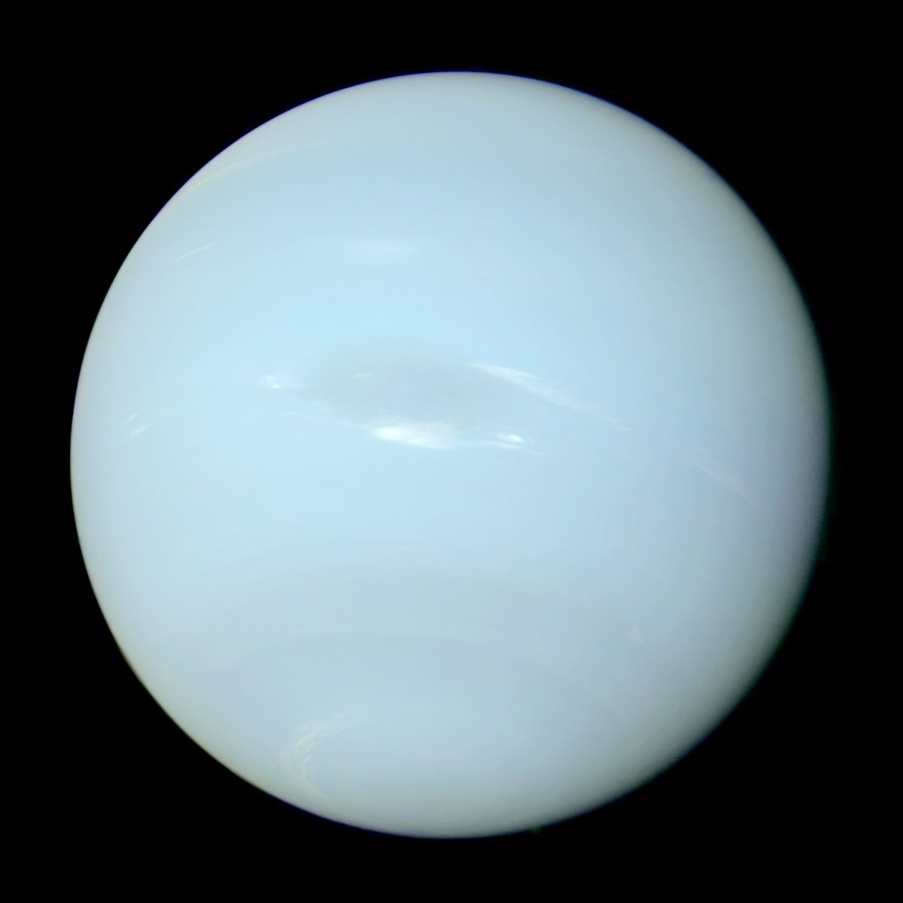

Poznaj Planety Naszego Układu Słonecznego
Odkryj fascynujące informacje o każdej planecie, od małego Merkurego aż po potężny Neptun. Ten projekt edukacyjny pozwala zrozumieć skalę i właściwości ciał niebieskich w naszym sąsiedztwie kosmicznym. Każda planeta w skali 1:10¹⁰ ma unikalny model drukowany w 3D z różnobarwnych filamentów.
Wszystkie Planety

Merkury
Najmniejsza planeta. Najbliższa Słońcu.

Wenus
Planeta o gęstej atmosferze. Najgorętsza planeta.

Ziemia
Nasza planeta. Jedyne znane nam miejsce z życiem.

Mars
Czerwona planeta. Cel wielu misji kosmicznych.

Jowisz
Największa planeta. Gazowy olbrzym.

Saturn
Planeta ze spektakularnymi pierścieniami.

Uran
Lodowy olbrzym. Obraca się na boku.

Neptun
Ostatnia planeta. Lodowy olbrzym z niebieskim kolorem.